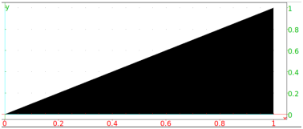

17.3.5 Tangent to a 2D graph
The tangent
command draws tangents to surfaces.
-
tangent takes two arguments:
-
S, the graph of a two-variable function or a geometric
object (see chapter 25).
- A, a point on S or a number (if S is a graph).
- tangent(S,A) draws tangent(s) to S passing through
A.
Example
Define the function g:
then the graph G of g and a point A on the graph:
| G:=plotfunc(g(x),x):;
A:=point(1.2,g(1.2)):; |
If you want to draw the tangent at the point A to the graph
G, enter:
or:

For the equation of the tangent line, enter: